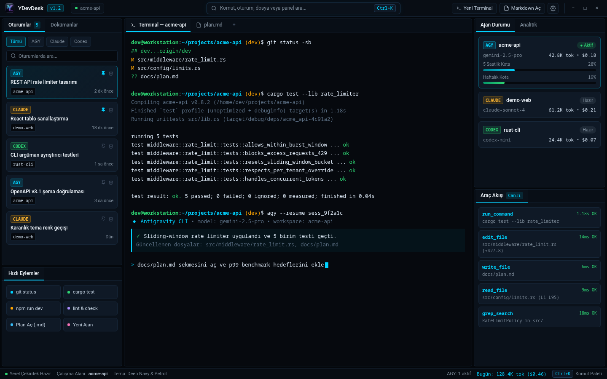
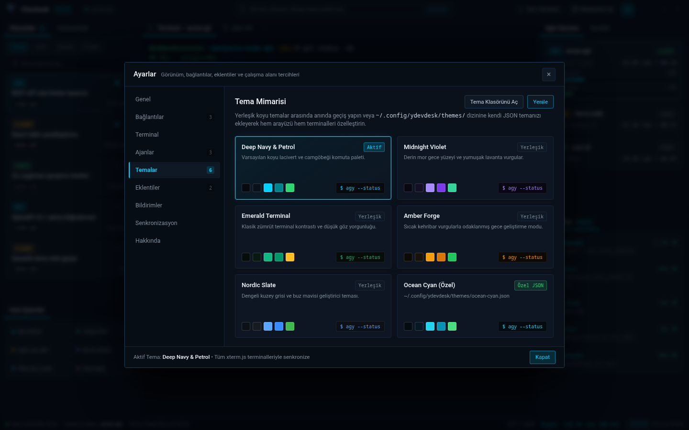
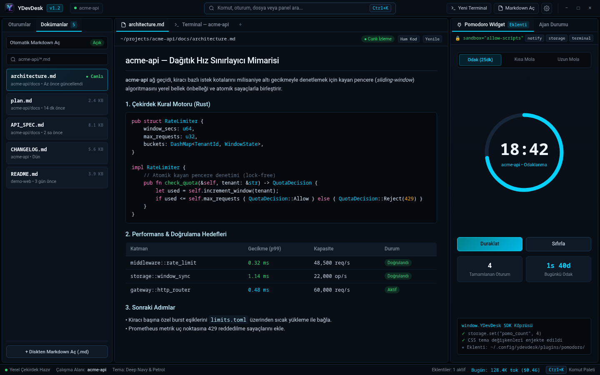
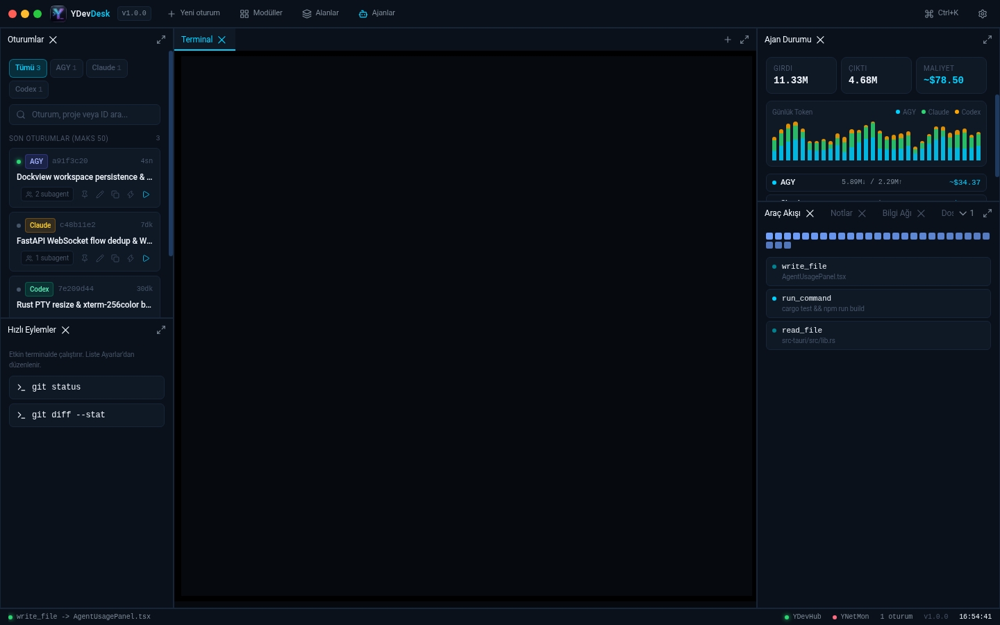
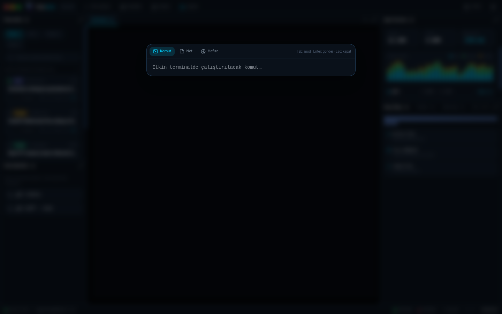

Çoklu Ajan Yönetimi
AGY, Claude Code ve Codex oturumlarını tek listede arayın, sabitleyin, yeniden adlandırın ve tek tıkla --resume ile devam ettirin.
YDevDesk; yerel PTY terminalinizi, Antigravity (AGY), Claude Code ve OpenAI Codex oturumlarınızı, canlı token/maliyet telemetrisini, otomatik Markdown görüntüleyiciyi, eklentileri ve özel temaları tek bir hafif Tauri v2 uygulamasında birleştirir.
curl -fsSL https://raw.githubusercontent.com/YagYz/YDevDesk/main/install.sh | bash
Dağınık terminal pencereleri, kaybolan ajan oturumları ve ağır Electron uygulamalarına veda edin.
AGY, Claude Code ve Codex oturumlarını tek listede arayın, sabitleyin, yeniden adlandırın ve tek tıkla --resume ile devam ettirin.
Panelleri sürükleyip bölün, proje bazlı çalışma alanları kaydedin, Ctrl+Shift+T ve otomatik çökme kurtarma ile düzeninizi hiç kaybetmeyin.
Ajanların ürettiği plan, rapor veya README dosyalarını tek tıkla ya da otomatik olarak temiz bir sekmede açıp okuyun.
Derleme yapmadan ~/.config/ydevdesk/plugins/ klasörüne HTML/JS eklentileri ekleyin; izole iframe ve izin kontrollü window.YDevDesk SDK ile güvenle çalışın.
Yerleşik koyu temalar arasında anında geçiş yapın veya tek bir JSON dosyasıyla hem arayüz CSS değişkenlerini hem de terminal renk paletini özelleştirin.
Tema Şablonu →İsteğe bağlı olarak çalışma alanlarınızı ve kısayollarınızı istemci tarafında AES-256-GCM ile şifreleyip kendi gizli GitHub Gist'inizde eşitleyin.
Click-to-Cursor desteğiyle komut satırında istediğiniz konuma tıklayarak atlayın; Tauri v2 + Rust çekirdeğiyle çok düşük RAM tüketiminde akıcı çalışın.
Merkezi sunucu yok, telemetri yok, izleyici yok. Yapılandırmalar 0600 izinli yerel dosyalarda tutulur ve tüm kaynak kod tamamen açıktır.
Claude Code, Codex ve AGY oturumları yaptıkları işi yerel bir SQLite hafızasına yazar, sonraki oturum kaldığı yeri okur. YDevHub gerekmez; ajanlara tek tıkla (önizleme ve onayla, yedekli ve geri alınabilir) bağlanır.
Nasıl çalışır ve sisteminize ne ekler? →Çalışma alanınızı özel temalar ve izole eklentilerle şekillendirin, ajan harcamalarınızı anlık izleyin.

9 kategorili düzenli ayarlar penceresi, 5 yerleşik koyu tema önizlemesi ve tek JSON dosyasıyla hem arayüz hem terminal renk paleti özelleştirme.

Ajanların oluşturduğu .md plan ve mimari dokümanlarını canlı sekmede açın; izole iframe içinde çalışan çalışma zamanı eklentilerini Dockview'a sabitleyin.

AGY, Claude Code ve Codex kullanımınızı 1g / 7g / 30g pencerelerde girdi-çıktı token, tahmini USD maliyet ve 5 saatlik / haftalık kota eşikleriyle takip edin.

Tek kısayolla aktif terminale komut gönderin, paneller arasında geçiş yapın, hızlı not alın veya YDevHub Bilgi Ağına kayıt ekleyin.
Dakikalar içinde kurun, mevcut ajanlarınızı otomatik tanısın ve çalışmaya başlayın.
Linux/macOS için tek satır install.sh komutunu çalıştırın ya da aşağıdan işletim sisteminize uygun paketi (.AppImage, .deb, .dmg, .exe) indirin.
YDevDesk cihazınızdaki AGY, Claude Code ve Codex CLI araçlarını algılar; oturum geçmişinizi ve token kullanımınızı yerel dosyalardan otomatik okur.
Dockview ile terminal, Markdown ve analitik panellerini dilediğiniz gibi dizin; isterseniz eklenti ve özel tema ekleyin veya şifreli Gist eşitlemesini açın.
Tüm paketler GitHub Releases üzerinden otomatik derlenir ve açık kaynak olarak dağıtılır.
AppImage, Debian/Ubuntu .deb, Fedora/RHEL .rpm veya APT deposu ile kolay kurulum.
Apple Silicon (M1–M4) ve Intel Mac'ler için yerel .dmg kurulum paketleri.
Windows 10 ve 11 için hızlı NSIS kurulum sihirbazı (-setup.exe).